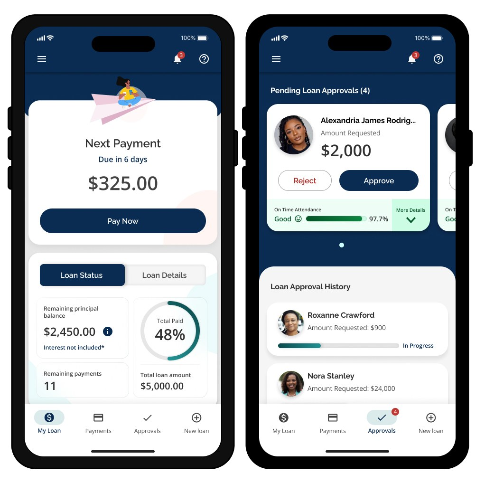

Mobile app for a micro-loan non-profit
UX Researcher & Designer at an IT consulting company, January 2022 to August 2023
Research and usability testing for a digital financial product that helps economically vulnerable women manage loans independently.
- 111k+monthly active users after launch
- 80%digital processing
- 97%member registration
- 1.16M+loans disbursed
- 4.9star rating
What I did
Led research and usability testing for a digital financial product serving low-income communities, and synthesised qualitative research and usability findings into recommendations that helped prioritise improvements for users.
Research with the people it was for
Primary research with 20+ users mapped daily realities, digital confidence and financial behaviours. Two personas, La Compañera and The Queen, guided design decisions from information architecture to micro-copy, so that someone using a smartphone for the first time could figure it out on their own.
What I delivered
Interview results, analysis, user flows, wireframes, usability testing results and actionable recommendations to align the MVP with real user needs. I collaborated with engineering, design and client stakeholders from discovery through delivery.
Who it served
The product was designed for Latin American and African American women living in vulnerable conditions, moving towards SDG 1 (No Poverty), SDG 5 (Gender Equality) and SDG 10 (Reduced Inequalities).
The figures describe the product I contributed to.